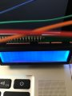
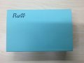

如果Google把AlphaGo做成云服务，围棋可能会成为人类第一棋类运动，同时，它也可能会拥有世界上最大的测试团队。
转发了范凯robbin 的微博：发布了头条文章：《2016年，还适合创业吗？》 ：中国互联网的创业热潮在 2015 年下半年逐渐进入了寒冬期。2016 年，还适合下海创业吗？目前还是创业的好时机吗？一个已经下海的创业者，又该如何度过资本的寒冬期呢？ http://t.cn/RGNxLCT
的微博：发布了头条文章：《2016年，还适合创业吗？》 ：中国互联网的创业热潮在 2015 年下半年逐渐进入了寒冬期。2016 年，还适合下海创业吗？目前还是创业的好时机吗？一个已经下海的创业者，又该如何度过资本的寒冬期呢？ http://t.cn/RGNxLCT
转发理由：范凯的文章写得很好看，如果能把我名字写对了，就更好了。
转发了Howie-Hu的微博：Hello World！纪念我第一次写硬件程序，感谢 Ruff @dreamhead 让我这个没上过大学的程序员突破硬件鸿沟！[呲牙]

转发理由：欢迎软件程序员和Ruff一起步入硬件开发领域。
转发了的微博：抱歉，此微博已被作者删除。查看帮助：http://t.cn/zWSudZc
转发理由：我们力争在春暖花开之际发布正式版，到时候，所有软件开发人员都可以杀入硬件开发领域，无限的创意被激发出来，进入真正的智能硬件时代。 //@MingjunYang: 求板子呀，环境都搭好了，就是没板子啊//@响马:很酷的东西，赞 //@dreamhead:Ruff一下，我喜欢这个说法！欢迎反馈。
转发了的微博：抱歉，此微博已被作者删除。查看帮助：http://t.cn/zWSudZc
转发理由：Ruff一下，我喜欢这个说法！欢迎反馈。
转发了屌丝准码农一枚 的微博：Ruff 开发版到了[doge][doge] http://t.cn/RUl5Qmi
的微博：Ruff 开发版到了[doge][doge] http://t.cn/RUl5Qmi

转发理由：感谢支持，期待你的反馈。
一个完全不懂硬件的小朋友，用一下午时间写的一个硬件小应用，这就是 Ruff 对于生产力的提升。http://t.cn/R4GsnJH
自打ES6引入proxy，JavaScript也可以method missing，也就能写出更多神奇的代码了。
转发了CSDN 的微博：#SDCC2015#Java泛型作者Gilad Bracha带来了《关于Dart语言》的主题演讲。作为一门Google发布的开发语言，它对于绝大多数开发者来说很容易上手（因为规则类似于JavaScript），Dart语言在移动开发和物联网编程方面具有极高的效率。创建者在发明Dart语言的时候首要考虑的因素是极简。
的微博：#SDCC2015#Java泛型作者Gilad Bracha带来了《关于Dart语言》的主题演讲。作为一门Google发布的开发语言，它对于绝大多数开发者来说很容易上手（因为规则类似于JavaScript），Dart语言在移动开发和物联网编程方面具有极高的效率。创建者在发明Dart语言的时候首要考虑的因素是极简。
转发理由：现场有个问题是，为什么Java的inner class有static，有非static的。老爷子说，做的时候没想好。
转发了CSDN 的微博：#SDCC2015#第三天上午9:30，编程语言论坛在Ruff CTO 郑晔的主持下正式开始。郑晔有十多年的编程经验，使用过多种开发语言。开场即抛出了一个容易引发争议的话题：哪门编程语言是在座者觉得最高效的？台下有人说是C++，有人说是Java，也有人说是Go语言...这个问题很难有准确答案。
的微博：#SDCC2015#第三天上午9:30，编程语言论坛在Ruff CTO 郑晔的主持下正式开始。郑晔有十多年的编程经验，使用过多种开发语言。开场即抛出了一个容易引发争议的话题：哪门编程语言是在座者觉得最高效的？台下有人说是C++，有人说是Java，也有人说是Go语言...这个问题很难有准确答案。
转发理由：语言场就是很容易调动。
QCon感悟：大多数喷Java的人都喷不到点子上，因为他们不了解Java世界的新发展，我都替他们着急。
QCon感悟：不是所有能写程序的人都是程序员。